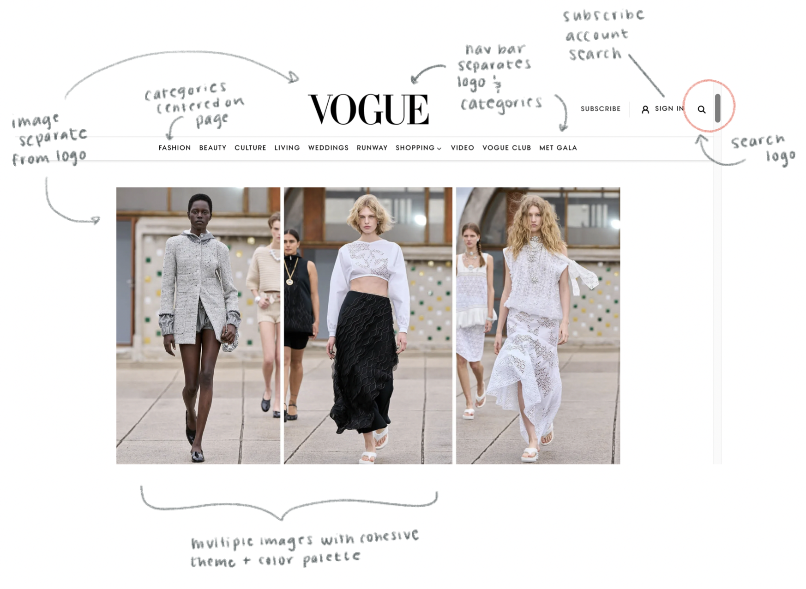
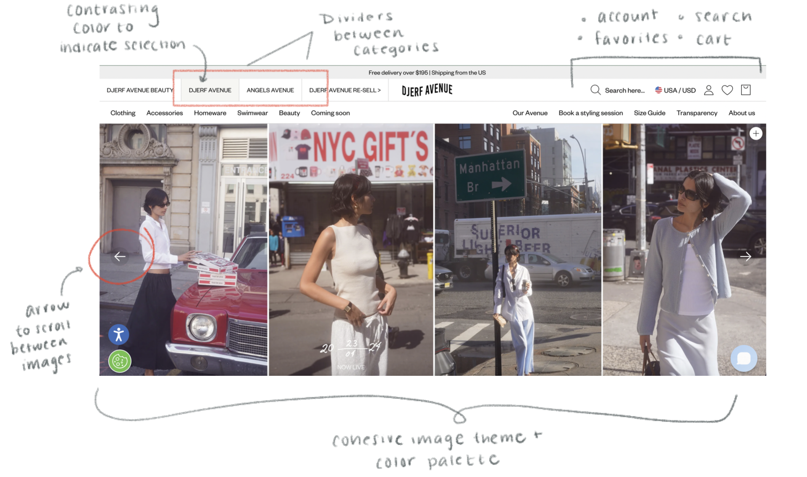

Brand, Digital, Redesign
(Designer, Personal student project)
"RANT INCOMING... I find shopping online at Zara so annoying.
So many of the pics are taken in artsy ways that don't even
showcase the clothes... Like why? ... Just give me a standard
non-posed shot on a white background please...RANT OVER"
The Problem
Identifying Usability Problems
On first glance, the Zara website is admittedly “aesthetically
pleasing”, in the sense that it seemingly resembles an
editorial fashion magazine. However, in the digital website
format, this design choice results in an poorly organized
website and un-intuitive customer experience. As visible in
the above screenshots, this begins with the home page, which
does a poor job of emphasizing the site elements users should
be interacting with - the table below describes several
issues pertaining to the usability of Zara’s website:


Research
The factor that most contributes to user frustration with the
Zara website is its un-intuitive design. Ultimately, the Zara
website lacks similarities to the traditional conceptual model
of an online shopping website. This is likely due to the fact
that the Zara website attempts to mirror the structure of an
editorial magazine, which does does not translate well in digital form.
As noted in the table above, the layout, coloring, and grouping of
various components in the website stray from the design standards that
ensure accessibility. For instance, oftentimes the colors
do not effectively contrast, products are grouped in confusing
categories, it is difficult to filter/scroll through products,
and button functions are not evident. Overall, Zara could benefit
from redesigning several components of its website to more closely
reflect the traditional online shopping conceptual models.
Iterating & the Problem-Solving Process
Taking a look at similar websites
In order to determine how the design elements of Zara's
website could best be altered to align with user intution
and industry-wide design best practices, I conducted a brief
analysis of the design choices and elements of websites that,
most importantly, aligned with Zara's company vision and
image. Although, as determined earlier, Zara's attempt
at creating a website with an "editorial" or "magazine" tone
has dircetly contributed to its un-usability, this theme is
ultimately a defining factor of Zara's company brand and values,
and must be preserved.

Case 1: Vogue
The Vogue website served as a key point of inspiration that I
frequently referenced throughout this project. Note that Vogue
shares a simmilar color pallette and minimalist style with Zara.
In addition, Vogue itself is the leading magazine in the fashion
industry, further aligning its brand image with Zara's. However,
unlike Zara, by following universal design principles, Vogue
successfully eminates a clean, artistic, and professional image
without sacrificing usability and accessibility.

Case 2: Djerf Avenue
A second website that served as a strong point of reference is the
Djerf Avenue website. Djerf Avenue and Zara have overlapping target
audiences, and are both popular companies in the online clothing
retail space. Similarily to the above Vogue comparison, the Djerf
Avenue website also has a clean, yet artistic appeal, with similar
color palettes and design elements (e.g. the navogation bar) to that
of Zara's.
some thoughts:
Note that this was simply a redesign project - the best
user experience is ultimately determined by, well, the user.
Therefore, it is difficult to pre-emptively measure the success
of these design choices. Moving forward, Zara can consider
conducting research through surveys, A/B testing, and more, in
order to statistically determine whether or not a change in design
is effective.